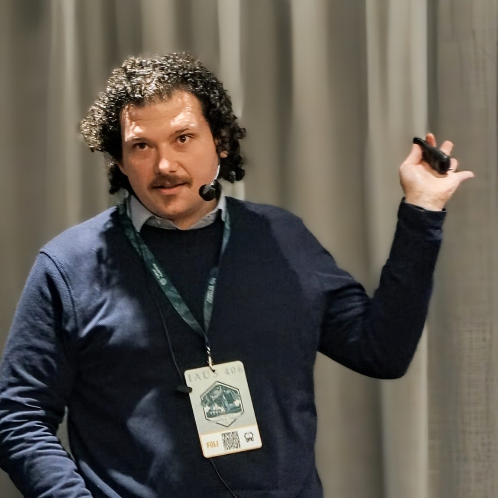

PhD Student in Astronomy & Astrophysics University of Bonn -> moving to University of Ghent

Me at the International Astronomical Union Symposium 406, presenting my work
I was born in Rome, completed my Bachelor's and Master's at Sapienza University of Rome, and continued my academic career by doing my PhD at the University of Bonn. My research focus is on the evolution of massive stars, their nucleosynthesis, their complex evolution in binaries, and their supernova explosions. I mainly do theoretical work, using numerical models, some analytical ingenuity and a lot of coding.
Artist impression of SN2022jli - Credit: ESO/L. Calçada
Contact info
This information will change in the upcoming months! Stay tuned!
email
aercolino [at] astro.uni-bonn.de
address
Argelander-Institut für Astronomie Office 1.002 Auf dem Hügel 71, 53121 Bonn, Germany